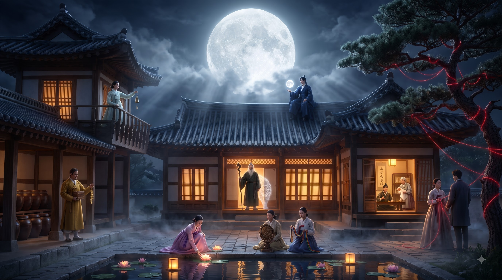

🔊
신령음 ON
⛩️ 10대 신령의 성지
천 년을 이어온
신령계의 문
이
당신 앞에서 열립니다
문 너머에는
10대 신령
이 기다리고 있습니다.
지금 문을 두드리면 당신의 명식이 봉인 해제됩니다.
🚪 신령계 문 두드리기

🏮
김늘봄
님의 명식 봉인 해제
👈 👉 좌우로 밀어서 10대 신령의 터를 둘러보세요
⛩️ 신령계 마당으로
도화신령
도화 · 매력 · 연애운
신령계 입장 전, 명식(命式)을 봉인합니다
성함
생년월일
태어난 시간
시간 모름
자시 (23:30~01:29)
축시 (01:30~03:29)
인시 (03:30~05:29)
묘시 (05:30~07:29)
진시 (07:30~09:29)
사시 (09:30~11:29)
오시 (11:30~13:29)
미시 (13:30~15:29)
신시 (15:30~17:29)
유시 (17:30~19:29)
술시 (19:30~21:29)
해시 (21:30~23:29)
성별
남성
여성
⛩️ 이 명식으로 신령계 문 열기